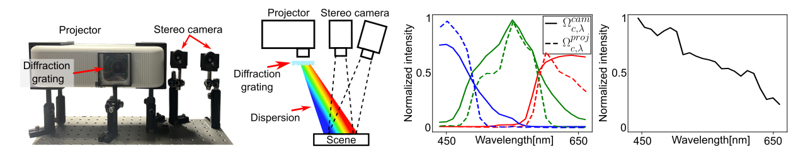

We introduce a spectrally multiplexed Dense Dispersed Structured Light (DDSL), accurate hyperspectral 3D imaging method for dynamic scenes. (a) Capture configuration, (b) estimated hyperspectral image in sRGB and depth image for dynamic scenes, (c) estimated hyperspectral image, (d) comparison with spectroradiometer measurements.
Hyperspectral 3D imaging captures both depth maps and hyperspectral images, enabling comprehensive geometric and material analysis. Recent methods achieve high spectral and depth accuracy; however, they require long acquisition times—often over several minutes—or rely on large, expensive systems, restricting their use to static scenes. We present Dense Dispersed Structured Light (DDSL), an accurate hyperspectral 3D imaging method for dynamic scenes that utilizes stereo RGB cameras and an RGB projector equipped with an affordable diffraction grating film. We design spectrally multiplexed DDSL patterns that significantly reduce the number of required projector patterns, thereby accelerating acquisition speed. Additionally, we formulate an image formation model and a reconstruction method to estimate a hyperspectral image and depth map from captured stereo images. As the first practical and accurate hyperspectral 3D imaging method for dynamic scenes, we experimentally demonstrate that DDSL achieves a spectral resolution of 15.5 nm full width at half maximum (FWHM), a depth error of 4 mm, and a frame rate of 6.6 fps.
We introduce a practical and affordable active stereo system using stereo RGB cameras and an RGB projector equipped with a thin diffraction grating film placed in front of the projector. The diffraction grating film disperses the broadband projector light according to the light wavelength λ. Each dispersed light ray of a specific wavelength λ then propagates to a scene, creating spatiallydistributed narrow-band spectral illumination.
Our active stereo system comprises RGB stereo cameras and a RGB projector equipped with a diffraction grating. The diffraction grating introduces dispersion to the projector light. We depict the spectral sensitivity/emission functions of the camera and the projector and the Diffraction grating efficiency.
@inproceedings{shin2024dispersed,
title={Dispersed Structured Light for Hyperspectral 3D Imaging},
author={Shin, Suhyun and Choi, Seokjun and Heide, Felix and Baek, Seung-Hwan},
booktitle = {Proceedings of the IEEE/CVF Conference on Computer Vision and Pattern Recognition (CVPR)},
year={2024}
}